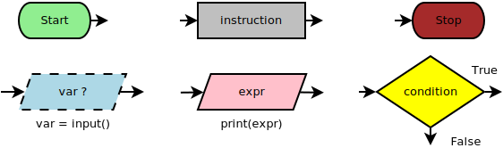
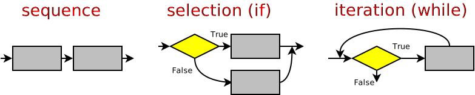

- Rappresentazione dei dati
- Numeri, testi, immagini e suoni
- Logica
- Algebra booleana, logica dei predicati
- Sviluppo del software
- Ciclo di vita, qualità e collaudo
- Teoria della computazione
- Linguaggi, automi, complessità

Michele Tomaiuolo
Ingegneria dell'Informazione, UniPR


If you wish to learn swimming you have to go into the water and if you wish to become a problem solver you have to solve problems. (George Polya)
P1 e P2

## Ubuntu, Debian etc.
sudo apt install idle3 python3-pip python3-pygame thonny
sudo apt install build-essential libboost-dev geany
#pip3 install cppyy

Example. Find the diagonal of a rectangular parallelepiped of which the length, the width, and the height are known. (Polya, pag. 23)
Make things as simple as possible, but not simpler. (A. Einstein)
For every complex problem there is an answer that is clear, simple... and wrong. (H.L. Mencken)
If you can't solve a problem... then there is an easier problem you can solve: find it. (G. Polya)
Vi scrivo una lunga lettera perché non ho tempo di scriverne una breve. (Voltaire)
Ottenere una soluzione più breve, semplice e chiara richiede di solito più iterazioni



Qualunque algoritmo può essere implementato utilizzando queste tre sole strutture (Teorema di Böhm-Jacopini, 1966)
Goto statement considered harmful (Dijkstra, 1968)
if e while:
Prendi la prima parola nel dizionario
Finchè non sei alla fine del dizionario:
Chiedi all'utente: “È questa la tua parola segreta?”
Se “Sì!”: finito!
Altrimenti: prendi la parola successiva
In un dizionario di 100k parole, alla peggio si provano tutte
SpazioDiRicerca = Intero dizionario
Finchè non hai indovinato:
Prendi la parola a metà di SpazioDiRicerca
Chiedi: “È questa la tua parola segreta?”
Se “Sì!”: finito!
Altrimenti:
Chiedi: “Viene prima o dopo della parola segreta?”
Se “Dopo”: Scarta la 2a metà dall'attuale SpazioDiRicerca
Altrimenti: Scarta la 1a metà dall'attuale SpazioDiRicerca
In un dizionario di 100k parole, bastano 17 tentativi
217 > 100k, dopo 17 dimezzamenti resta un solo elemento


Rover: si muove sul terreno, salta, spara verso destra e verso l'altoBuche: il rover ci può cadere dentroRocce: ostacoli, che possono essere colpitiAlieni: sparano in basso e possono essere colpiti


Michele Tomaiuolo
Palazzina 1, int. 5708
Ingegneria dell'Informazione, UniPR
sowide.unipr.it/tomamic